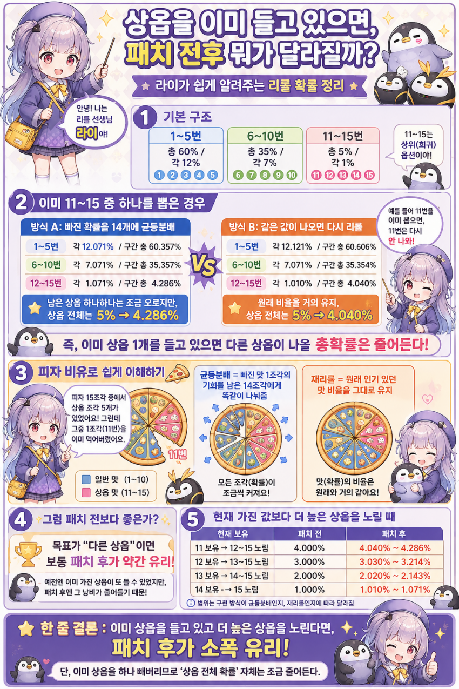
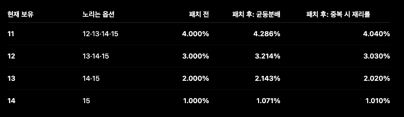
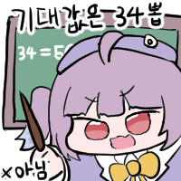
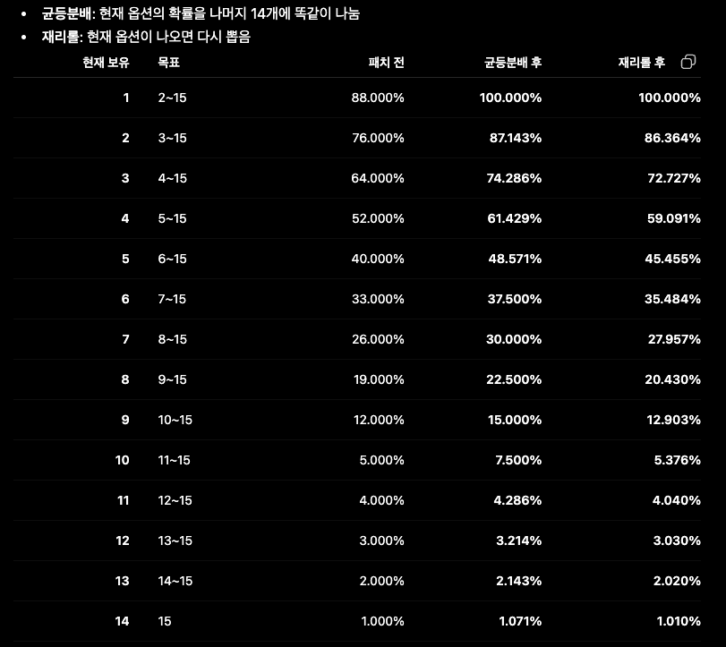

일단 모듈패치가 균등 or 재리롤 이 둘 중 하나로 정해질 것 같은데
둘이 뭐가 다른지 GPT가 피자비유법으로 정리해줌

즉 뭐가됐든 상향임.
Q. 내가 상옵을 들고있다면 5%로 상옵 뜨는게 4%대로 됐는데 왜 상향인가요?
A. 어차피 네가 리롤을 돌리는 이상 '다른 옵션'을 원하는 것이고, 그것보다 상위 옵션을 바라게 될거임.
즉 11옵을 들고있다면 12~15옵이 나올 확률은 원래 4%였는데, 그게 올라가게 되는거삼.

즉 네가 11~14옵을 각각 들고 있다고 할 때 위와 같은 표가 나오게 됨.
만약 균등분배라면 하위옵일 때 압도적으로 이득이 커서 상대적으로 작아보이는거지, 재리롤에 비해서도 엄청나게 좋은 패치가 맞음.
만약 재리롤이라면 뭐, '그정돈 아님' 되는거고, 그래도 이득은 맞음


각자 자기보다 높은 옵션을 노린다는 가정 하에 확률표
결론
패치 전에 모듈 쓰면 바보
균등분배 방식은 안 쓸 확률이 높다봄